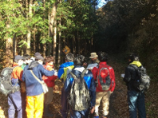
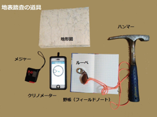

1-2. 地表踏査の目的と方法
地質図をつくるための野外調査（フィールド調査）のことを地表踏査といいます。地表踏査は以下のように行います。
あらかじめルートを調べて効率的に調査

実際に野外で地質調査を行うときは、地層が見える崖（露頭）を観察して、その観察結果を地図上に記入していきます。地層は、川の侵食によって露出することが多いため、 あらかじめ地形図などで、川沿いの崖や沢の河床などを通るような調査ルートを設定しておきます。
調査ルートに沿って露頭ごとに観察を行い、岩相、堆積構造などの特徴や走向・傾斜などの測定結果を、野帳（フィールドノート）や地形図に書き入れていきます。
地表踏査に持っていくもの
調査には下のような道具が必要です。このほかに岩石を採取するためのサンプル袋（または新聞紙）とマジックペン、ハンマー使用時の保護メガネ、色鉛筆、ボールペン等も必要でしょう。
調査ルートには危険なところもあります。地形や気候、調査日程に合わせて、帽子、長靴、虫よけ、水筒などの装備が必要となってきます。 また、一人で山や沢に入るのは大変危険です。必ず、指導できるおとなの人と一緒に行動するようにしましょう。

調査道具
地表踏査を行ったら、観測結果をまとめて調査ルートの地質図をつくります。